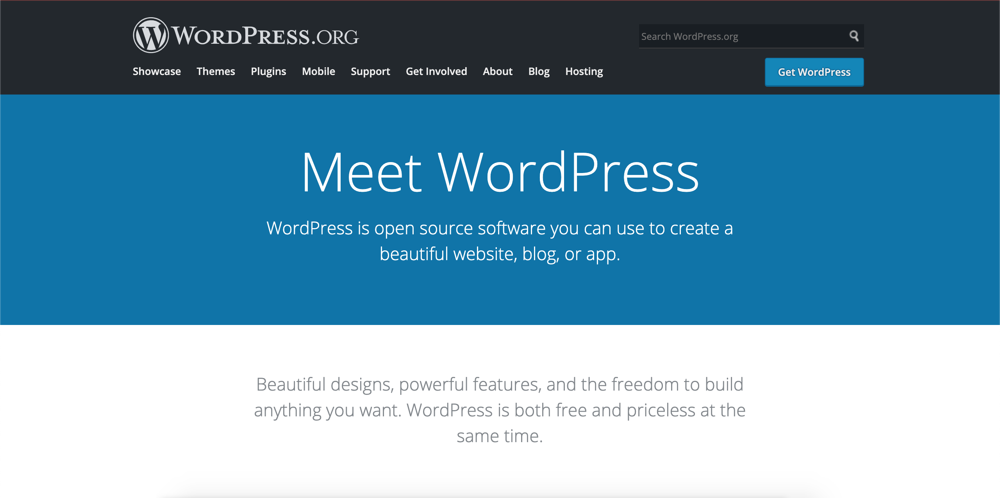

project dot
MKT 422 - Team D
Solange Nhan, Rodolfo Rose, Terrie Truong, Jing Wang
Welcome!
Welcome to the one-page website that explores and details the different aspects we have curated for Project Dot’s marketing plan!
As you progress down the gradually darkening gradient of red, you will see a variety of suggestions ranging from making changes to your current operation and adding on new ideas and platforms.
All of the information is cited with the article hyperlinked in each in-text citation, and all citations are included at the end. Websites are linked as well for easy access, and images are provided to help visually guide you.
Use the menu to easily navigate between the suggestions!
We hope this information proves useful and helps you grow Project Dot into everything you dream of.
Thank you, and on with the show!
Suggestions for Physical Changes
Suggestions for Digital Changes
Suggestions for New Components
Citations
suggestion one: use inclusive language
Society has been made to believe that only women menstruate and their reproductive organs are what determine one’s gender; however, that is not the case. In fact, not all women menstruate, and not everyone who menstruates is a woman. When coupled with the fact that transgender, gender non-conforming, and non-binary (TGNC/NB) people, especially Black and Brown people, are disproportionately affected by poverty, it becomes even more important to be inclusive and let them know that help is available (Roark, 2019).
According to the ACLU, menstrual products are not uniformly available in bathrooms and homeless shelters (Arkles & Weis-Wolf, 2019). Limited access negatively affects TGNC/NB people especially, so missions for menstrual access and equity should be made open to them.
Clue, a period and ovulation tracker app, uses gender neutral language throughout their app and uses their platform, both through their blog and social media, to help educate users about the importance of using gender neutral language when talking about periods. They state that people who do not fit under the common definition of “women” are often “easily isolated, marginalised, stigmatised, and discriminated against” (Bell, 2017). Their blog post, “Talking about periods beyond gender,” is a great place to start to familiarise yourself with the issue.
Project Dot’s “About us” page states that the mission is to supply feminine hygiene products to “homeless and low income girls, women, binary and transmen,” but the terminology is incorrect and not present throughout the site. Most of the site mentions “girls,” “women,” and “feminine hygiene,” and that can read as exclusionary to TGNC/NB people who are interested to learn more, help, or even receive help.
As an organization that works to raise awareness and support for hygiene needs in homeless and low income communities, Project Dot should implement more inclusive language. More inclusive language indicates support for marginalised communities, and it provides the opportunity to reach and help more people.
Don’t use:
- Girls
- Women
- Feminine hygiene
Think about using:
- People who menstruate
- Menstrual hygiene
- Personal hygiene with a focus on menstrual hygiene/menstruation/periods
- Specifically mention transgender, gender non-conforming, and nonbinary (TGNC/NB) people
suggestion two: include resources alongside the motivational message
According to a Homeless Hub blog post, a blog run by the Canadian Observatory on Homelessness (COH), it is important to leverage existing campaigns and resources to increase awareness (Woolley, 2015). Motivational messages can be helpful, but coupling them with resources can make the card even more effective for recipients.
The 3x4 inch card could either be expanded to include more information, or the resources can be placed on the back. While some resources may be a given, it can be important to have them typed out for people to reference whenever they need to.
Some of the resources that can be included are:
- General resources
- Homelessness resources
- LGBTQ+ resources
- Mental health resources
- School resources
There is a comprehensive list divided into different categories available on Help Hope Home, an organisation aiming to end homelessness in Southern Nevada. There is also a list of resources from them available in a brochure format here. While this is an extensive list, one of each of the mentioned categories above would be beneficial for any recipient of the Project Dot kit.
suggestion three: social media
Social media is a huge part for any organisation that allows them to reach so many different people for little to nothing. It can help “engage supporters, capturing and retaining their attention,” and can increase awareness for the organisation (MissionBox, 2020). However, social media should be taken seriously and integrated with the marketing plan for maximum efficiency and effectiveness.
According to MissionBox, a communication hub for nonprofits, a survey conducted among more than 9,000 small to medium-size nonprofits in the United States and Canada showed that Facebook is a primary social network for them, with Twitter next and other platforms like YouTube, LinkedIn, Pinterest, and Instagram following behind (MissionBox, 2020). Social media can boost messages and establish relationships with partners to grow the organisation. Analytics can also inform you more about the audience you are reaching and make posts far more effective. In fact, for nonprofits, social media is growing 3x faster than email and should be used to announce what is happening and what is coming (Lee).
Buffer has a guide for nonprofits looking to up their social media game, and it should be considered to see what works best for you!
Project Dot should consider expanding the breadth of social media being used and make sure the accounts are linked to the main website. That way, all platforms are consolidated into one area and make it easier for anyone interested to access them.
Instagram
Instagram would be a great platform to expand into. Wild Apricot, a site filled with resources for nonprofits, has a guide for using Instagram as a nonprofit that includes tips like making a business account (labeled as a nonprofit) and connecting your Instagram and Facebook accounts (Morand, 2019). Instagram is a great opportunity to post educational graphics, to educate followers and appeal to visual learners, and progress pictures, to let people know how you are doing and what you are doing. This allows you to connect with the community and reach a younger audience.
Professional account benefits and how to switch to a professional account
Instagram has the option to make your account a professional one. From there, it can be labeled as a 'Nonprofit,' and it provides insight to help grow the account.
Personal photos are amazing, but if you're looking for other assets to complement, here are other resources for stock photos and photo editing:
- Canva — good for editing and can be used on desktop or mobile devices
- StockSnap — free stock photography
- Pexels — free stock photography
Twitter
Twitter would also be a great platform for interacting with audiences. It does not hurt to have different platforms to reach different audiences, and Twitter can be good for having conversations within the community and learning from others. Advocacy-based organisations tend to do well on Twitter because it fosters discussion and debate (Morand, 2020). However, it works best when accounts engage with followers and replies to tweets, so if engagement is not something you want to be involved in on Twitter, then you could skip out on using it.
TikTok
TikTok can potentially be another platform for interacting with younger audiences. Although a late comer to the game, it has become one of the fastest growing platforms for teenagers. In 2019, 2% of U.S. teenagers aged 13-17 said TikTok is their most used social app (Meola, 2019). The advantage of TikTok is its ease to use. The content consists of 15~60 sec short videos. Content shooting and editing can easily be done over the phone as well. The disadvantage of TikTok is its policy on censorship and user privacy concerns. Many older generations have a rather negative attitude towards the app and may stop their kids from using it.
Despite the stigma surrounding the platform, TikTok can be used to cultivate relationships with younger audiences and spread awareness of the organisation’s campaign and message. It might be worth looking into.
Platform Management
However, with multiple platforms, social media scheduling is another aspect that should be considered. It allows people to be “active” online without actually being online, and you can bulk produce content and schedule them out to make it more convenient for your schedule (Barley, 2018). Additionally, it allows you to manage different accounts.
Each platform depends on your taste, but try considering:
- Buffer — free basic plan but offers plans with more benefits like more accounts and more scheduled posts, pricing info here
- 50% off for nonprofits with documentation, more info here
- Later — free basic plan but offers plans with more benefits, pricing info here
- 50% off for nonprofits with documentation, more info here
suggestion four: logo
Logos are a part of brand identity and important to the overall perception of the organisation. It seems relatively simple and something you can create on your own or with free software, but logos are representative of your brand and something that should have a lot of thought put into. Having your logo designed by a graphic designer has a number of benefits, such as saving time and money (especially in the long run), helping you stand out amongst other organisations, and keeping your branding consistent (Garza, 2015). Overall, having a professionally created logo is more helpful than not.
The current Project Dot logo is simple and to the point, but if desired, hiring a graphic designer can elevate the logo and help establish a more concrete brand identity. Working with a graphic designer allows you to establish a relationship where they know your wants and needs and can specifically create a tailored design. If it is a local designer, it helps create connections within the community. Free logo makers are available, but having a graphic designer ensures that the design will be unique and catered to the brand. Additionally, this is an opportunity to establish design elements for the entire organisation that can be carried on into the future.
Try looking at different local agencies’ portfolios to see if any of their work connects with what Project Dot stands for. There is also the option of looking for freelance graphic designers to commission and work with.
Logos may seem simple and unassuming, but crafting a logo that is visually appealing and effective is an art and a practice that should be recognised and valued as such.
suggestion five: website
A website is a symbol of branding and a hub of information that can be used to reach audiences; it should be one of the most important aspects of your nonprofit. Project Dot’s website is simple and has the information, but it can be elevated to be more effective and efficient.
It is important for websites to be accessible for any audience. Having a responsive website means ease of access no matter the device, whether it be a computer, tablet, or phone. All of the information should be available in one place to best inform users of the organisation’s mission.
There are a variety of options to choose from when it comes to creating a website. Here are a selection of them, in alphabetical order, to explore and perhaps choose from:
Caard
Caard homepage
Caard creates simple and fully responsive one-page sites for any and all of your needs. It offers a variety of pre-made templates and also gives you the option to customise your site to your liking. It offers a free option, but also has a pricing plan that gives you access to premium options.
Using Caard for free means having Caard’s branding across the website. It is ideal for simple websites and limited to 50 elements.
Caard offers a Pro Standard option for $19/month. It gives you the option to embed your own code (for increased customisation), does not have Caard branding throughout the site, allows simple forms for information collecting, and provides analytics.
Please visit the pricing plans page for more information.
PageCloud
PageCloud homepage
PageCloud is a drag-and-drop website builder and uses a “what you see is what you get” (WYSIWYG) editor that lets you know how the website is going to look as you build it. It allows for app integrations to link with other platforms, like social media, and creates responsive pages. It is also optimised for SEO and gives you full access to source code for increased flexibility. PageCloud also offers templates for you to choose from and makes designing less of a hassle.
They offer a business plan at $20/month with features like access to expert support, blog creation, and offers both free access to G Suite and a free custom domain for one year.
Please visit the pricing plans page for more information.
Squarespace
Squarespace homepage
Squarespace is a professional website builder that uses a drag-and-drop builder and offers beautiful visual templates. It offers a minimalist and professional look with SEO optimisation while also being fully responsive and.
It is available to use on the Personal plan that charges $12/month. It offers the basics like website metrics and access to their customer support and is good for simple websites starting out.
Please visit the pricing plans page for more information.
Weebly

Weebly homepage
Weebly is a beginner friendly website builder with great templates. It uses a drag-and-drop builder and WYSIWYG editor and offers SEO optimisation and fully responsive sites. It allows for social media integration and great for sites that center on user interaction.
Weebly is free to use, but they also offer a Personal plan for $6/month with access to a custom domain and a Professional plan for $12/month that gives you more options to grow your business.
Please visit the pricing plans page for more information.
Wix
Wix homepage
Wix is an easy to use drag-and-drop builder that provides great user control. They have an extensive app market with access to widgets to enhance the site. It has an option to embed code for more customisation and offers SEO optimisation and fully responsive sites.
Wix is used for free, but your site will have Wix branded ads and no custom URL. The Combo plan is available for $14/month that removes ads and provides a custom URL. It is the most basic of the payment plans and great for small websites, but there are other plans available that offer features like analytics and ad vouchers.
Please visit the pricing plans page for more information.
Wordpress

Wordpress homepage
Wordpress is an open source content management system that gives users a lot of freedom over their websites. It is good for content creation, like blogs, and offers a wide variety of widgets and themes. It uses a WYSIWYG editor and offers SEO optimisation and responsive sites. However, there is a bit of a learning curve with using WordPress, and it requires regular updates.
Wordpress is completely free to use; it just needs to be hosted. Bluehost is a recommended host that starts at $2.95/month for the initial term if you go through the WordPress and Bluehost partnership.
Please visit the hosting page for more information.
Summary
Here is a brief overview of each of the sites and the available/recommended pricing plans.
Please visit the sites for more information and to view the pricing plans to make the best possible decision.
| Platform |
Description |
Pricing |
| Caard |
Simple one page sites |
Free
Pro Standard for $19/month
|
| PageCloud |
Ease of use and great customisation |
Business for $20/month |
| Squarespace |
Professional website builder with great designs and ease of use |
Personal for $12/month |
| Weebly |
Beginner friendly website builder with great templates |
Personal for $6/month
Professional for $12/month
|
| Wix |
Easy to use drag-and-drop builder that provides user control |
Combo for $14/month |
| Wordpress |
Open source content management system with lots of freedom |
Free*
*Pay for hosting Bluehost starts at $2.95/month |
suggestion six: donations
Donations are a pivotal part of any nonprofit organisation. However, it is not just about receiving donations but also donor cultivation. Donor cultivation is about engaging donors and learning about their feelings and perspectives on the organisation to encourage repeat donations (Haddad, 2018). By communicating and engaging with donors, organisations are able to establish relationships that can be long lasting in supporting the cause.
PayPal

PayPal logo
Project Dot currently uses PayPal which is great for receiving donations directly on the platform. They charge 0% platform fees and 2.2% + $0.30 transaction fees for nonprofits with 501(c)(3) status and 2.9% + $0.30 for organisations without this status. More information is available here.
However, PayPal does not really target donors and establish relationships with them.
DonorBox
DonorBox logo and example
DonorBox is an online donation tool that integrates donation forms into the website and helps cultivate donor engagement. They allow for social media integration and have other integrations like Company Gift Matching (for $40/month) and email marketing with Mail Chimp (for $8/month). It has a platform fee of 1.5% along with additional processing fees depending on what donors use to pay:
- 0.8% + $0.30 per transaction for ACH bank payments (capped at a maximum of $5 per transaction)
- 2.9% + $0.30 per transaction for PayPal payments
- 2.2% + $0.30 if the organisation has 501(c)(3) status
- 2.9% and $0.30 per transaction for Stripe payments
- Discounted rates available for nonprofits. More information here.
While PayPal is perfectly acceptable, Donorbox offers additional features that should be considered. Some of them include:
- Monthly, Annual, Weekly and Quarterly Recurring Donations
- Donors Cover Fees
- Collect Address, Phone, Employment
- Custom Donation Page
- Tax Receipt
View a comparison of DonorBox vs. Paypal here.
Donations are an important part of funding nonprofits, and it should be given the same amount of consideration as the website and other marketing tools.
suggestion seven: out of home (OOH) marketing
Internet access is not something we consciously think about everyday but it is a luxury not everyone can afford. With the amount of menstruating homeless people there are in Las Vegas, not all of them have access to a cellular device or internet in general. Out-of-home (OOH) marketing would be beneficial as it can be seen via foot traffic and does not require internet or a third-party way of viewing.
OOH marketing has a variety of advantages and disadvantages. It has a wide coverage of local markets and the ability to create awareness (Belch & Belch, 2018). Additionally, it allows organisations to be creative while being efficient and effective (Belch & Belch, 2018). Unfortunately, OOH marketing does lead to waste coverage and can be hard to measure (Belch & Belch, 2018). Ultimately, it is up to the organisation to determine if it is the best fit, but OOH marketing can be extremely beneficial for nonprofits who want to increase awareness about their cause. Especially for Project Dot, it can be useful for getting the message out there for the local community.
OOH marketing is effective in delivering a message and driving traffic to the website when available. According to the Outdoor Advertising Association of America, OOH advertising generates four times the rate of online activations than their relative ad spend (Williams, 2017).
A few examples of OOH marketing that can be adopted are:
- Flyers posted in shelters, soup kitchens, gas stations, and nonprofit organizations or handed out in highly frequented areas
- Flyers are cheaper to produce en masse and could be distributed directly to menstruating individuals for awareness or future reference
- Office Depot prints flyers starting at 74¢ per copy
- Lawn signs are seen almost everywhere, especially during election season (road side, close to schools, or on neighborhood lawns)
- Visible and can be posted anywhere that is highly frequented by homeless and disadvantaged people
- Office Depot produces yard signs starting at $12.99 per sign
suggestion eight: partnerships
Partnerships with other organisations is a great way to expand nonprofits. By working with appropriate organisations, such as schools or churches, nonprofits can broaden their reach and get their message out to the community to increase engagement (Council, 2020). Word of mouth can also go a long way towards reaching a wider audience, and this leads to an increase in brand recognition within the community. Partnerships give nonprofits the opportunity to appeal to more people who are willing to advocate for their mission and who may want to volunteer and help (Council, 2020). This means more resources and help to accomplish the mission.
Project Dot could reach out to schools in CCSD and even higher education institutions to spread the word about period poverty. When learning about puberty and sex education, it may be helpful for educators to also provide resources with the help of Project Dot. This can also establish a partnership with the district and give the organisation a larger platform. Additionally, Project Dot could consider hanging up flyers on campuses for people to see and potentially learn more from; it can also help those in need who were not aware before. Project Dot can even be a volunteering option for students who are looking to get more involved as they could help create kits. Partnering with local churches can expand the reach through communities across the city. With greater outreach, period poverty can be destigmatised, and Project Dot can reach more people who need help.
Even if partnerships do not work out, it could still be beneficial to make Project Dot known as a resource and option. Spreading the word to influential organisations throughout Las Vegas will also expand Project Dot’s reach and platform.
references
Arkles, G., & Weis-Wolf, J. (2019, December 17). Menstruation-Related Discrimination is Sex Discrimination — We Don’t Need to Erase Trans or Non-Binary People to Make That Point. ACLU. https://www.aclu.org/news/lgbt-rights/menstruation-related-discrimination-is-sex-discrimination-we-dont-need-to-erase-trans-or-non-binary-people-to-make-that-point/
Barley, L. (2018, January 15). Social Media Scheduling: The Benefits of Social Media Scheduling and Why You Should Start Scheduling Today. Ignite Search. https://www.ignitesearch.com.au/social-media-scheduling-the-benefits-of-social-media-scheduling-and-why-you-should-start-scheduling-today/
Belch, G.E. & Belch, M. A. (2018). Support Media In Advertising and Promotion: An Integrated Marketing Communications Perspective (11th ed., pp 452-475). New York, NY: McGraw-Hill Education.
Bell, J. (2017, April 26). Talking about periods beyond gender. Clue. https://helloclue.com/articles/cycle-a-z/talking-about-periods-beyond-gender
Council, F. N. (2020, May 19). Six Big Benefits Nonprofits Can Gain From For-Profit Partnerships. Forbes. https://www.forbes.com/sites/forbesnonprofitcouncil/2020/05/19/six-big-benefits-nonprofits-can-gain-from-for-profit-partnerships/#795075c32a8b
Garza, R. (2015, March 19). 5 Reasons You Should Hire a Professional Graphic Designer. LinkedIn. https://www.linkedin.com/pulse/5-reasons-you-should-hire-professional-graphic-designer-rob-garza
Haddad, F. D. (2018, June 29). Donor Cultivation Is Key to Success. NonProfit PRO. https://www.nonprofitpro.com/post/donor-cultivation-is-key-to-success/#:~:text=According%20to%20GiveGab%2C%20%E2%80%9CHow%20to,retaining%20and%20ensuring%20future%20donations
Lee, K. (n.d.). Social Media for Non-Profits: High-Impact Tips and the Best Free Tools. Buffer. https://buffer.com/library/social-media-non-profits/
Meola, A. (2020, February 12). Analyzing Tik Tok user growth and usage patterns in 2020. Business Insider. https://www.businessinsider.com/tiktok-marketing-trends-predictions-2020
MissionBox. (2020, April 1). Why Social Media Matters to Nonprofits. https://www.missionbox.com/article/118/why-social-media-matters-to-nonprofits
Morand, T. (2019, September 17). Instagram For Nonprofits: The Ultimate Guide. Wild Apricot. https://www.wildapricot.com/blogs/newsblog/2019/09/17/instagram-for-nonprofits
Morand, T. (2020, January 15). Twitter for Nonprofits: Does Your Organization Really Need to Tweet? Wild Apricot. https://www.wildapricot.com/blogs/newsblog/2020/01/15/twitter-for-nonprofits#3
Roark, C. (2019, October 18). Period Poverty Affects Transgender and Gender Non-Conforming People, Too. Teen Vogue. https://www.teenvogue.com/story/period-poverty-transgender-and-gender-non-conforming-people
Williams, D. (2017). OOH Online Activation Survey [PowerPoint slides]. Retrieved from http://omac-website.s3.amazonaws.com/wp-content/uploads/2017/05/Nielsen-OOH-Online-Activation-Study-2017.pdf
Woolley, E. (2015, January 16). How to raise awareness about hidden homelessness. Homeless Hub. https://www.homelesshub.ca/blog/how-raise-awareness-about-hidden-homelessness
^